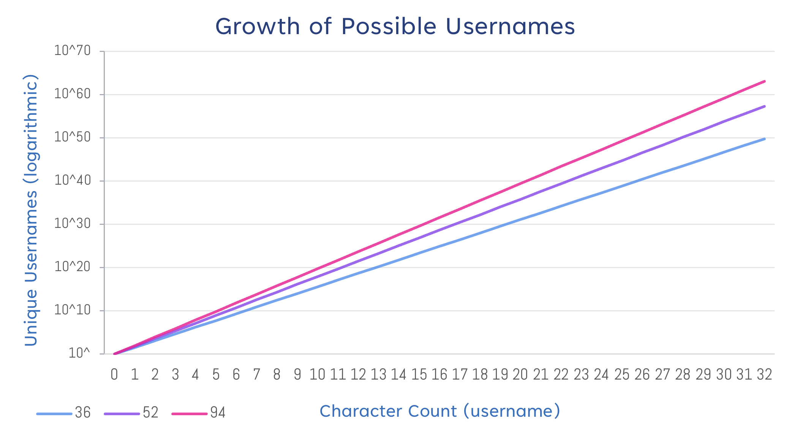

Assort (origin). v2.0.0, 2024 ~ ~.
~writing/origins.md.
© 2024 Sup#2.0 (https://github.com/Sup2point0)
ACI: 20.04.
CXUL: SP-LR-AS-AQ
IQTS: 6x3sF7-e2kzW0.02d
[!Tip] You can also use the outline pane (upper right on github.com).
Many a times in the past have people, both those I have met online and those I know in real life, inquired into the origins behind my username Sup#2.0. However, for years the answer has been “oh, there’s so much lore behind it” [sic], or I have resorted to giving a quick (and often inconsistently incomplete) rundown, which leaves much to be desired, if only on my end. This will seek to remedy that. We will take a deep dive into the lore, reasoning and rationale behind the username of Sup#2.0 and its derivatives, analyse its evolution, structure and aptness, and finally consider various potential alternatives.
This is perhaps a rather confused piece of writing, both in style and purpose; whether this is intentional or not shall, as per tradition, be left as an exercise to the reader. I’m sure there is plenty of profound meaning and allegory intwined here amidst the ambience and quasi-sarcastive ironicity, but as the supposed writer I’m afraid I could not tell you – it is up to you what you make of it. Hopefully this brief introduction will have only confused you further and unsettled any doubts still plaguing your mind. Enjoy.
Across the various sites and services of the internet, users are given the option to create their own ‘username’, a pseudonym much like our real names that will represent that person online. Whether this must be unique, or if it can be modified once set, depends on the platform in question. However, often in the interest of creating an online ‘identity’ or ‘persona’ – especially for those involved in the content creation, such as music artists, livestreamers, YouTubers, etc. – individuals will decide upon a username and stick to it across platforms.
Some platforms (such as YouTube↗ and Discord↗) distinguish between an ‘identifying’ and ‘displayed’ username (note that these terms are unofficial). The key difference is that identifying usernames must be unique for each user, while displayed usernames can be identical to another user’s.12 However, from a syntactic perspective the only difference is in the restrictions placed upon their format – for the purposes of analysis their distinction can be ignored.
TLDR; a number of distinct styles of usernames have emerged, dependent on several features which we will take into consideration when analysing
Sup#2.0later on.
Usernames are represented as strings of characters. At the very least, this includes the 26 letters of the English alphabet, and almost always the 10 arabic numerals too. Most platforms will also keep capitalisation (though not all, particularly in identifying usernames), and some allow non-alphanumeric characters, such as hyphens and underscores. This, perhaps expectedly, is sufficient for an incredible number of username possibilities. (We expand upon this in Appendix 1.0↓.)
With users striving to create unique, distinct and ultimately ‘cool’ usernames, a number of distinct styles or formats have emerged – structures or patterns that many usernames follow, involving features such as word choice, capitalisation, and symbol usage. These give them a particular ‘flavour’ or ‘vibe’ that can be difficult to put into words. Several of these structures can be decomposed into combinations and variations of different features, yet may not always be the sum of its parts; as always, context and nuance is paramount. We will explore these features and endeavour to characterise the general impressions they tend to leave.
| words | capitalisation | separation | decoration | |||
|---|---|---|---|---|---|---|
| 1 | lower | soup |
underscore | _soup_ |
||
| initial | Soup |
hyphen | -Soup- |
|||
| upper | SOUP |
‘x’ | xXSOUPXx |
|||
| 2 | lower | soupysoup |
none | soupysoup |
underscore | _soupysoup_ |
| initial | Soupysoup |
space | Soupy soup |
hyphen | -Soupysoup-
|
|
| title | SoupySoup |
underscore | Soupy_Soup |
‘x’ | xXSoupySoupXx |
|
| camel | soupySoup |
hyphen | soupy-Soup |
|||
| upper | SOUPYSOUP |
|||||
| dynamic | sOuPySoUp |
|||||
| 3 | lower | soupthesoupy |
none | soupthesoupy |
underscore | _soupthesoupy_ |
| initial | Soupthesoupy |
space | Soup the soupy |
hyphen | -Soupthesoupy- |
|
| title | SouptheSoupy |
underscore | Soup_the_S_oupy |
‘x’ | xXSouptheSoupyXx |
|
| camel | souptheSoupy |
hyphen | soup-the-Soupy |
|||
| upper | SOUPTHESOUPY |
|||||
| dynamic | SouPtheSouPY |
|||||
A hallmark of ‘online’ text is freedom of capitalisation. As mentioned earlier, however, not all platforms are case-sensitive, which can – and often does – ruin usernames that utilise it.
Capitalisation is one of the core factors affecting the feeling of a username. We identify the following styles with disinct criteria for each. Note that the analysis of their effect may lack objectivity and context, and is only a generalisation.
| capitalisation | examples | critera | analysis |
|---|---|---|---|
| lower |
soup, soupysoup
|
All letters are lowercase. | |
| initial |
Soup, Soupysoup
|
First letter is capitalised. | |
| title | SoupySoup |
Every distinct word is capitalised. | |
| camel | soupySoup |
Every word is capitalised, except the first. | |
| upper |
SOUP, SOUPYSOUP
|
All letters are uppercase. | Loud, bold. Dependent on word length and choice. (Compare ASH and HYPEREXPLOSION) |
| dynamic |
sOUP, sOuP, SoupYsouP
|
Varying capitalisation, though may follow a pattern. |
[!Note] This section is a primary account written from a personal perspective. As a disclaimer, it may contain inaccurate, exaggerated or outright untruthful content. There is no malicious intent behind this – it is simply a result of the extraordinary length of time that has passed since the events in question. I have done my best to reconstruct the progression based on the details I am able to remember.
As a child I did not have much interaction with the internet – electronics, certainly, but my online presence came much later.
The first occasion where I found myself requiring a username was when I played diep.io↗ for the first time. This is one of many iconic .io games, which formed an unforgettable part of my childhood. In diep.io, the goal is to control a tank and attack other players, defeating them to increase your score and unlock upgrades. Naturally, a username would be desirable here, to leave an impression upon your opponents’ minds as they fall under your might, or – more likely – making a name for yourself in the hopes that other players may someday recognise you.
I suspect I may have played as an unnamed tank at first, which is indeed an option diep.io and many other .io games offer (very rarely would other platforms allow this, for evident reasons). In-game, this leaves the space above a player’s tank empty, where their username would otherwise be displayed, and in death screens or notifications, they are simply referred to as “an unnamed tank”. The only other username I can recall using is KILLER, though this is concerningly dubious. Soon it occurred to me that I should decide upon a permanent username to be known as.
If I recall correctly, I first heard of the word “sup” from my childhood friends. Though very much faded, I can still feel some twinge of... envy, perhaps? – in all honesty, I cannot remember – but there was certainly a feeling. I was never one to keep up with slang (this is still somewhat the case today3) and that word just fascinated me for some reason. As to how I learnt the word from my friends, and the context in which they used it, those have been lost to time; the obvious would be them using it as a greeting, but I feel like this wasn’t the case.
And so, when it came to devising a username for myself, I settled on Sup (capitalisation unknown). This is, exactly, the origin of my username – a cool word I heard from my friends as an innocent child who felt mildly left out. I could not tell you if I planned on this staying with me forever, but that quiet kid who strays from mainstream, and does their own thing? He’s still here, and I hope he stays with me forever.
I was happy with “Sup” for a while. I cannot remember the feeling, but I know I would’ve loved the username. I can almost imagine the intense pride and sense of uniqueness I must’ve felt at the time.
This next part is probably the most questionable detail in this entire story, and at this point I’m conflicted as to whether it is actually true or just a fabrication of my mind that I’ve managed to trick (almost ‘doublethink’ 4) myself into believing.
One day, I happened to come across another player called “Sup” (again, capitalisation unknown). Now this, was unacceptable. My username absolutely had to be unique. I had never considered that someone else might think of using the same username of “Sup”, and this revelation shook me greatly. Immediately I began considering what I could change it too. I settled on keeping Sup, but adding more to it. This ended up being #2.0.
The (original) reasoning behind Sup#2.0 can be summarised as follows:
It seemed cool.
The hashtag (strictly speaking, the hash) was, quite simply, a cool character. There’s nothing else to it. I must’ve just been looking for a symbol to throw into the mix, and decided the hashtag would be cool.
2.0, however, was originally 0.2. See, I knew “x-point y”, where $x$ and $y$ are elements of the set $\set{0, 2}$ and $x\neq{y}$, was a technical ‘term’, and it blew the mind of my inner child. Except, I didn’t know which way round $x$ and $y$ were, and thought “0.2” looked correct – as it happens, it wasn’t. So I was skulking about as Sup#0.2, thinking I had a fantastic username, when I had gotten part of it embarassingly wrong.
It took us working with LEGO WeDo 2.0↗ at school for me to realise the technical part I wanted to add should have been 2.0, not 0.2. Immediately, I updated it to its purest form today – Sup#2.0.
Around the time of Sup#2.0’s conception I had briefly watched a YouTuber wbangca↗. He, as was becoming popular at the time5, had an elaborate intro animation to his videos. It consisted of many video feeds flying in to merge into a single cube, which then revealed his username, wbangca.
This utterly blew the mind of my younger self, and, loving to create my own parodies of things, I imagined what my own intro with Sup#2.0 could look like. I would have videos flying inwards, but instead of arranging into a cube, they would meld together to form the hash #. This did not play a part in the conception of Sup#2.0 per se, but was certainly something that reinforced it in my mind.
Being into .io games, especially diep.io, I would watch other people play on YouTube. There was no one I enjoyed more than iXPLODE↗, who I remained a dedicated viewer of for years. He6 did end up, unfortunately, being corrupted by Fortnite’s↗ surge in popularity, and stopped making .io games content; however, his old videos can still be found on his channel.↗
In the .io games community there existed ‘clans’, generally named after popular .io games YouTubers (TheLegendMasterOv was especially prominent.7). It is unclear whether these were intentionally created by those YouTubers themselves, or unofficially started by loyal fans. Note that these had no intrinsic functionality in-game, but had other emergent effects, such as friendship, rivalry, teaming, and ultimately, promotion for the YouTuber. Players, if they so chose to do so, would denote the clan they belonged to with a ‘tag’ before their name, resulting in [clan] username.
The iXPLODE fanbase also had a slightly different tradition. iXPLODE would name himself iX while playing,8 and his fans followed suit. (It is also possible fans started naming themselves iX as an abbreviation of iXPLODE, and iXPLODE picked up on this; it is unclear which happened first) This had the effect of allowing any player named iX to become essentially anonymous, which iXPLODE started doing to avoid the hassle of unwanted arguments (in .io games where chat was available) and targeting (i.e. purposefully chasing after recognised players).9
Despite at first having scoffed at .io games players who added clan tags for their pretentiousness, eventually I decided I wanted to show my attachment to iXPLODE too. Nevertheless, I did not want to erase my identity entirely, so I used iX as a prefix – hence my .io games username unlocked its final evolution: [iX] Sup#2.0. Looking upon this form of the username always brings a pang of nostalgia to my heart.
iX is a wonderfully simple abbreviation of iXPLODE, but impressively manages to retain personality and elegance (as per previously discussed in Structural & Stylistic Features↑). I have always found [iX] to be a rather non-disruptive tag, and enjoy how the i slots comfortably into the X with the square brackets wrapping firmly around – of course, I am biased, but these still stand. Above all, its shortness and simplicity lends itself extremely well to being a tag, unlike others such as [MasterOv] and [...], which often end up dominating the usernames they affix. [iX] complements Sup#2.0 nicely, adding even more flavour with the brackets, capitalisation and unique characters.
Inevitably, I fell out of .io games, and with it, dropped the [iX] tag. This takes us to the present, where Sup#2.0 is firmly here to stay. Although, with the increase in the number of sites I have created accounts on, many of which have different username allowances, Sup#2.0 is actually rarely seen as my username – rather, Sup2point0 has become far more ubiquitous. We will expand further upon this in A Look at Derivatives↓.
While the chronological progression of events was straightforward to recall, pinpointing when they occurred was not.
Through a hybrid technique of introspective neural reactivation and psychochronological meta-analysis, we can (approximately) deduce the following.
-
Supemerged as early as 2014, and likely no later than 2016. -
Sup#0.2has a significant probability of having arisen in late 2016 to early 2017, possibly earlier. - The amendment to
Sup#2.0would have occurred not too long after, but still a considerable duration (in the range of days to a few months). - Much uncertainty surrounds when
[iX]was added, but it would have occurred between shortly afterSup#0.2and not too long afterSup#2.0. - I believe
[iX] Sup#2.0was the variation of the username in use for the longest, though this way have been warped by perception. -
Sup2point0was first used in 2017 or 2018.
Due to aforementioned character restrictions,↑ more often than not Sup#2.0 cannot be used as a username. (The # tends to be especially problematic.) This is unfortunate, but it is a reality I have come to accept.
On lenient platforms where . is allowed but # is not, Sup2.0 thus becomes the next best option. Indeed, it does look somewhat empty or incomplete without the # (discussed in Pristine Perfection↓, but the essence of the username is there. In rare cases where capitalisation is not retained (specifically Discord usernames10), sup2.0 may occur – even more tragedic, but still preferred over the following.
This has, undoubtedly, become the most ubiquitous form of the username, used as a login username, handle, and in URLs. Containing only alphanumeric characters and not caring about capitalisation all that much, it is highly reliable and almost guaranteed to work on any platform.
The word point is an expansion of ., since 2.0 is read ‘two-point-oh’. It is apparent that Sup2point0 looks decidedly more awkward than Sup2.0, though once it becomes familiar, this mostly fades away.
TLDR; a lot of the things I say, write, name and use are related in some way to the username
Sup#2.0.
This username has sparked the creation of many idiosyncrasies, archetypes and inside jokes. Explaining them may be like dissecting a frog,11 so proceed at your own risk.
“sup” (lowercase) has become, without a doubt, my go-to and absolute favourite greeting. It acts as both a greeting and conversation starter, can be taken to mean either, and sets an informal and fun tone. The latter is also why the lowercase here is important. Friends of mine may recount instances where I accidentally send a capitalised Sup, and immediately correct it with *sup – which might appear rather questionable, but is absolutely vital.12
“suppety sup” (pronounced /ˌsʌpətiˈsʌp/) is sparingly used as a playful and cuter variant. It can be taken to follow the format of “hippety hop”.
To illustrate how prevalent my usage of “sup” is, data was collected from my conversations with people online,13 and is illustrated in the figures below.
[ Greetings Census Distribution | Data collected and totalled across several personal Discord chats and servers. ]
Focusing on a singular chat with ? messages from me.
[ Greetings Sample Distribution | Data collected from personal chats across various platforms with the same friend. ]
The data in these figures is from December 2023, and will become steadily out of date; however, the relationship they illustrate remains the same.
Perhaps the one word my usage of confuses people most is “soup”.
I’ve taken quite a liking to this meaning, and have used it ever since. While “soup” has the literal meaning of ‘soup’ one drinks, “soup” (/suːp/) can also be heard as a playful corruption of “sup” (/sʌp/), where the rounding of the mouth changes the ʌ to uː.
A quintessential saying of mine is as follows:
sup sup’s sups sup sup’s sup sup sup sup’s sup sups
Contrary to popular belief, this ‘sentence’ not only makes sense, but holds meaning and purpose.
[!Warning] Spoilers ahead. Proceed at your own peril.
First, to identify its inherent structure and distinct constituents, we fragment the phrase and add punctuation as follows.
(sup), (sup’s sups) (s’up) (sup’s sup sup), (sup sup’s sup sups)! (sup)?
Despite all sounding identical, each word encapsulates its own meaning. When spoken, this can be brought out through tone and stress. Finally, let us now translate it.
sup, Sup’s sups who’re up Sup’s super sup, sip on Sup’s superior sups! sup?
A stray thought that once crossed my mind was what if I weren’t called Sup? This is no doubt an interesting consideration. The username Sup has become such a part of my identity and personality now, that it is exceptionally difficult to imagine being called anything else.
As it happens, I did proceed to devise a list of potential usernames (for myself). It is highly unlikely that these will ever actually be used, but trying to think of them proved just how difficult it would be to find a truly perfect username (other than Sup#2.0, for me). The ‘presentable’ candidates are listed below, and the best few are discussed in more depth.
| username | variations |
|---|---|
Avidity |
|
CryoCrystal |
|
LiterallyAwesome |
|
LoneFlyingPenguin |
|
LuckiestLoon |
|
RailTail9 |
RailTail7 |
Resplendent |
Resplendence |
Severescence |
|
SuperVescence |
Supervescence |
Synchra |
SynchraNaut, synchraNaut
|
Every option here encapsulates different ...
I find this filled with intrigue and character. It derives from ‘Synchro’ monsters in Yu-Gi-Oh!↗.14
SynchraNaut / synchraNaut is even more intriguing, and initialises nicely to SN / sN.
While I personally find Dawn filled with personality and possibility, it is also fairly generic, definitely not unique, and a real name. Of all the alternatives, however, this is the one I have envisioned being known by the most, and in all honesty, going by ‘Dawn’ would be pretty cool.
Every option here holds its own character, and I love each and every one of them. Yet while I would be happy using them, none of them are entirely perfect – of course, neither is Sup, but Sup#2.0 strays quite close. Really, I’m looking for something to capture the character in all of them within a single username, which is understandably nigh on impossible.
Previously in Structural & Stylistic Features↑ we mentioned the huge number of possible usernames. Here we take a deeper look at this and consider just how many there are.
Ignoring semantics (i.e. if a username is realistic), this is influenced by 2 factors: the size of the character set (which characters can be used), and the character length limit (the maximum character length of a username). For instance, with a character set {S, Q} and a character limit of 3, we obtain the following possibilities:
| length | permutations | total |
|---|---|---|
| 1 |
S, Q
|
2 |
| 2 |
SS QQ SQ QS
|
4 |
| 3 |
SSS QQQ SSQ SQS QSS SQQ QSQ QQS
|
8 |
| total | 13 |
Let us try to now generalise this. Given a character set of size $c$ and a character length of $N$ characters, the number of possible usernames can given by $c^{N}$. However, we also consider usernames shorter than $N$, hence we add on the permutations for $N-1$, $N-2$, etc. We can express this as
$$ \sum_{n=1}^{N} c^{n} $$
It is apparent how quickly this sum grows if either $c$ or $N$ is increased, especially when both are multi-digit integers. The graph below illustrates this growth as $N$ increases for different values of $c$.
|  |
| Figure ? Log-scale graph of unique usernames with respect to character limit and set size. |
Without capitalisation, the alphabet has 26 characters. Including numerals, we take the character set to have 36 characters. From a purely mathematical perspective, this already provides far too many unique usernames to ever come close to running out, even with character limits in place. With capitalisation, this expands to 52 characters. Including all of the characters that are indicated on a standard QWERTY keyboard (ignoring unprinted or unindicated keyboard combinations), we reach 94 characters.
[!Note] This section contains subjective content, as well as significantly off-topic digressions.
When discussing username styles in Structural & Stylistic Features↑ we avoided using real examples for continuity and objectivity. Here we take a look at some usernames I find exceptionally interesting, creative, and/or memorable.
Silentroom↗, formerly polycube (2012–201?),15 is a rhythm game musical artist.
We can classify Silentroom as a compound 2-word initial-case username. Compared to others of its kind, I would say it pulls it off much better. This is somewhat down to “silentroom” sounding almost like a single compound word, rather than distinctly ‘silent room’ (hence why SilentRoom would actually be less effective). That cohesion also has the effect of emphasising its meaning, while allowing it to grow into something more. Considering the backstory of Silentroom as an artist, it is an absolutely apt name charged with weight and emotion.
On YouTube, the video titles for Silentroom’s tracks follow the unusual format of <track> / Silentroom (as opposed to the standard <artist> – <track>). This further accentuates Silentroom, but the / also places the 2 parts on equal ground, resulting in quite a special effect.
While on the topic of Silentroom, one of his most renowned tracks is Nhelv↗, which is an incredible specimen of a name – for anything. It appears to be a portmanteau of nerv (German for ‘nerve’) and hell; literally ‘nerve hell’, fitting for its neurofunk genre, sound design and visuals.
I am incredibly lucky to have found a username that so perfectly encapsulates me, and that I love wholeheartedly even decades since its conception. For those of you yet to find yours, I wish you the best. It may not be easy, but it’ll be worth it.
Thank you for reading this far. I hope you enjoyed.
Written, researched and recalled by Sup#2.0 (@Sup2point0), November 2023 – ? 2024.
- Figures created in Microsoft PowerPoint 2016 (offline) for Windows 10.
- IPA characters typed using ipa.typeit.org↗.
I would like to extend my gratitude towards the following:
- The creators of diep.io↗.
- My primary school friends who introduced me to diep.io.
- iXPLODE↗, for being part of my childhood.
- wbangca↗, you played a small, but probably vital part.
- Everyone who asked me where my username came from. Your constant reminding was what drove me to embark upon and actually complete this ridiculous endeavour.
- Markdown, for providing such a wonderful format to write this in.
- GitHub, for providing such a fantastic platform to host this on.
- That one player I met called ‘Sup’. None of this would’ve been possible without you. If you even exist.
- Childhood me. You were ahead of your time, truly. I’m unbelievably lucky to have grown from you.
2023/11/18 I started writing this at a really terrible time.
2023/11/23 Now the time is good. We’re gonna finish this.
2023/11/24 Damn, this just got big.
2023/11/25 Oh no, I just realised I could talk about my profile picture too... I think we’ll leave that for another time 0.o
2023/11/27 Should I just write an autobiography at this point?
2023/12/05 Why not just look at other people’s usernames while we’re at. Just for fun.
2023/12/06 Yooo, Markdown referencing is awesome!
2023/12/07 And so the appendices appear... I wonder how many we’ll have?
2023/12/15 We’ve gotta keep going with this. Ikuze!
2024/02/22 Ok, nvm, we’ll continue this at some later date...
Just in case you’re still bored.
[!Note] Due to Markdown limitations, references and footnotes are listed together.
-
YouTube Help. Handles overview. https://support.google.com/youtube/answer/11585688 ↩
-
Discord Help. .... <...> ↩
-
Sup#2.0. Assort, Slinqui. <../slinqui.md> ↩
-
doublethink, ‘to simultaneously accept 2 conflicting beliefs as truth’. Nineteen Eighty-Four, George Orwell, 1949. Wikipedia: https://wikipedia.org/wiki/Doublethink Cambridge Dictionary: https://dictionary.cambridge.org/dictionary/english/doublethink ↩
-
... ↩
-
... ↩
-
... ↩
-
... ↩
-
... ↩
-
... ↩
-
”Explaining a joke is like dissecting a frog. You understand it better but the frog dies in the process.” E. B. White. https://www.goodreads.com/quotes/440683-explaining-a-joke-is-like-dissecting-a-frog-you-understand ↩
-
sauce: trust bro ↩
-
JSON data collected (with consent) using ..., then analysed with RegEx queries in Microsoft Visual Studio Code. ↩
-
A Monster Type in the Yu-Gi-Oh trading card game. https://yugipedia.com/wiki/Synchro_Monster ↩
-
... ↩